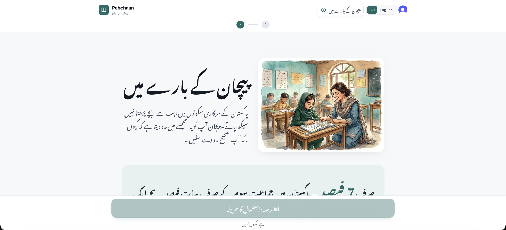
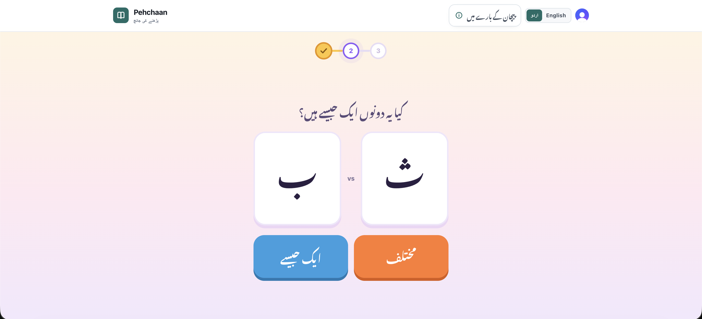

A reading-check tool for Pakistani primary school teachers
I have undiagnosed ADHD, something I only realized much later in life. When the hackathon was announced, I kept asking myself: what should I build that actually helps someone?
While looking for ADHD specialists, I saw how underserved we are. It's not just that we don't diagnose conditions like ADHD, autism, or dyslexia — we don't even acknowledge them. In government schools and low-income areas, any child who can't focus, can't read, or struggles in class is called "lazy" or "nalaiq."
Only 7% of Pakistani children can read a simple Urdu/Sindhi story. Have we stopped to ask why?
Diagnosing learning differences is hard. Even in developed countries, it takes multiple sessions with skilled professionals. We don't have that luxury — but we do have teachers.
After days of research and brainstorming, one thing became clear: teachers are our light. If they can spot early signs in the classroom, we get 80% of the impact with 20% of the effort.
Pehchaan is not a diagnostic tool. It does not tell you a child has dyslexia, ADHD, or anything else. It simply highlights, based on a short assessment, what the child might be struggling with — so teachers and parents can take the next step.
With limited time and resources, we've built a teacher-facing assessment web app.
Right: About page screenshot

The assessments are grounded in available research, adapted for Urdu, and include preliminary checks for hearing, vision, and eyesight.
The child goes through short, game-like activities — rapid naming, letter matching, and a mini teaching moment — that reveal patterns in how they process written Urdu.
Right: Assessment UI screenshot or GIF

This is genuinely step 0.
Let's see Pehchaan in action.